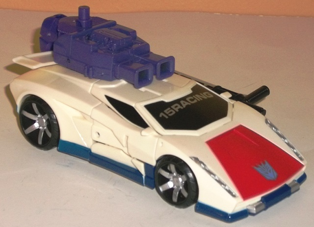
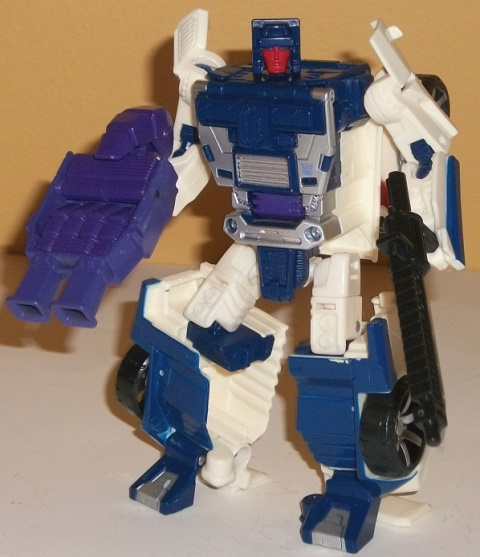
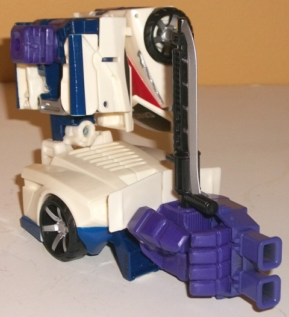
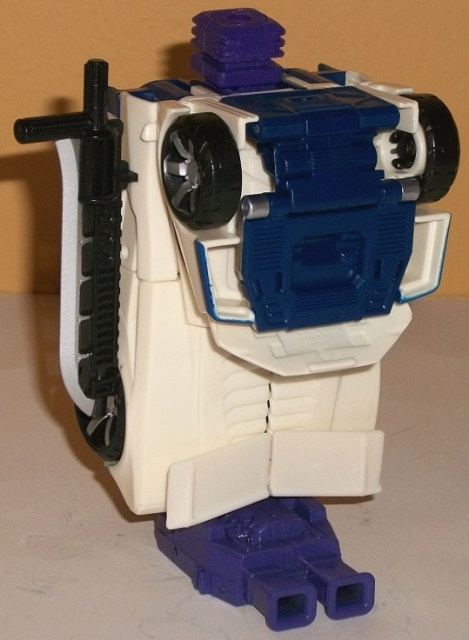

Allegiance
: Decepticon
Size
: Deluxe
Difficulty of Transformation to Robot:
Easy
Difficulty of Transformation to Leg
:
Very Easy
Difficulty of Transformation to Arm
:
Very Easy
Color Scheme
: Off-white, dark blue,
and some royal purple, flat dark purple, black, silver, moderately dark
metallic red, and metallic dark blue
Rating
: 7.5


Breakdown's G1 alternate
mode is redone pretty faithfully here-- there's juuuust enough differences
from an actual Lambourghini Diablo to escape licensing issues, I assume,
but he's definitely that same kind of car, with proportions that are largely
spot-on. The only real exception to this is that the roof/windows don't
come up enough above the body of the car-- the roof could stand to be a
bit taller over the front roof area, but this isn't a huge deal. There's
also no robot mode extras whatsoever-- always a positive. The mold detailing
in this mode is rather minimal, given the sleek nature of the sportscar,
but the long three-per-side headlights detail is pretty cool-looking, and
the vents on the top are also well-sculpted. The color scheme is classic
Breakdown; he's mostly off-white plastic, but there's a fair amount of
black (on the windows and tires), and he has dark blue along the bottom
rim of this mode, along with the classic red paint app on the front hood.
The silver headlights and wheel hubs are also a nice touch, though unfortunately
the taillights and/or vents on the top aren't painted at all; without anything
plugged into the top, this can make the top back half of this mode look
rather plain. He also has "15RACING" painted rather annoyingly right across
his windshield, which I assume can only stand for the year he was released
(2015) and, of course, Racing. I do wish that paint app had been used for
something else. As opposed to simply sticking into one of Breakdown's 5mm
ports (there's one on the top and one on the back end of this mode), Breakdown's
hand/foot/gun piece can attach via a couple of small tabs above his rear
vents to form an external engine, with fairly intricate mold detailing--
it looks quite good, and the purple does add a bit more to Breakdown's
color scheme to keep the back half from looking too white, but the purple
paint on the front section of this accessory is a noticeably flatter color
than the purple plastic used for the rear half of the accessory and Breakdown's
combiner port. Breakdown also comes with a sword accessory, which can slot
into the side of either of his car doors via a tab, or alternatively I
guess you could plug it into the 5mm port on the back side-- either way,
it sticks out pretty obviously. I wish there was a way to store it under
the car or something.
Breakdown's transformation
to robot mode is fairly straightforward, mostly consisting of folding the
car front back and them simply segmenting up the car parts into Breakdown's
feet and arms. A neat little twist is that Breakdown's head and chest fold
down from his back over his combiner peg, making it almost entirely hidden
in this mode (just a bit of the purple shows through on the abs). The legs
also fold out in a C-shaped formation, as opposed to the usual fold-open
leg extension often used with other CW deluxe molds. In robot mode, Breakdown
looks... okay. His proportions aren't outright horrible, but his arms seem
a little too square and odd since they make up the car doors, and his legs
are a tad too short-- particularly when you compare the upper legs to the
lower legs. Because of his aforementioned C-fold transformation in the
legs, there's a HUGE hollow gap in the sides of his lower legs, which I
really wish had been covered up with a panel or something (and I'm not
someone who harps on every little gap in modern TFs, but
come on
).
There's also the issue of the entire front third of the vehicle mode on
his back, though this stays out of the way for the most part and is really
only an issue if you look at him from a side view; otherwise it's a minimal
eyesore at worst. On the positive end, the heels are made of the halves
of his rear tailfins, which is a bit of a stroke of genius. The head is
pretty well-detailed, though his expression is a bit TOO neutral for me;
he's paranoid, show him with a nervous look in his eyes or something! The
chest also has a good amount of mechanical detailing on it, and there's
some interesting bits and bobs elsewhere on his form as well, such as what
look like headlights on his knees and partially-revealed gear details on
his shoulders. His color scheme is also more interesting in this mode,
with dark blue making much more significant of an appearance here and separating
up all that off-white quite effectively. The silver on the chest and the
red face help break up the dark blue on his chest and head quite well,
too. Breakdown's articulation is also pretty good; he can move at the neck,
shoulders, elbows (at two points), rotation at the waist, and movement
at the hips (at three points), knees, and slightly forward at the toes
(though his heels can only move back, so the more you do this the less
stable he becomes). Breakdown's sword is fitted so that he can hold it
either as a sword or some kind of bayonet-gun; your choice. His hand/foot/gun
can also either be held in one of his fist holes like normal or plugged
into a peg hole on his back, to make the engine bits stick up behind his
head-- mostly as a feature to be used for his retool later down the line,
Sunstreaker, but there's nothing preventing you from using it here.


For Breakdown's arm
mode, his arms and chest/head/undercarriage pieces fold back into their
vehicle position, while his legs stick together to form the lower arm.
The good thing about this mode is that his arms are small enough to form
a rather solid foundation for the shoulder, without really obviously being
arms. The car front backpack is obvious, but does give the shoulder some
much-needed bulk and doesn't get in the way of articulation, so it's a
minor issue at best. The lower arm is pretty decent, though I don't like
the instructions mentioning to use the legs with the feet extended into
their robot mode position; having the spoiler from vehicle mode and the
feet behind the hole that the hand piece plugs into makes for a rather
weak-looking extension to the arm. I prefer to leave the foot pieces in
their vehicle mode position, personally, as it makes for a more solid-looking
lower arm, even if it's a tad shorter. For the most part, Breakdown has
the same articulation in this mode as nearly any other CW deluxe-- he can
move at the shoulder (at two points), elbow (at two or three points, depending
on whether the robot knees are facing forward or not), wrist, thumb (at
two points), and at the base of his four fingers (all moving as one joint).
The difference here is that-- if you'll compare him to other CW deluxe-arms--
he has side-to-side movement at the elbow, due to his transformation. It's
more functional than the usual slight side-to-side motion provided by two
combined arms at the elbow (as is the case with most other CW deluxes),
so he has slightly more of a range of movement than other CW deluxes here.
Breakdown's leg mode
is pretty simple-- it's literally just his car mode stood up on the back
end with the foot piece plugged in, the front section folded back, and
the combiner peg folded up. This makes for a pretty solid-looking leg mode,
but there's no "kneecap"-- the combiner peg is pretty darn obvious, with
nothing to partially cover it up like on, say,
Offroad
.
It's also a bit overly square for a leg, even if it is solid. Breakdown
has the same movement as any other CW deluxe in leg mode-- he can move
at the knee (at two points) and rotation at the ankle.
Combiner Wars Breakdown
is... adequate. He's not outright terrible-- his vehicle mode is awesome,
and his arm mode is pretty solid. His leg mode is a bit square and simplistic,
but still gets the job done. It's his robot mode I have some issues with,
most of them proportional-- add together MAJORLY hollow legs, arms that
are too small, a chest that is a bit too wide, and back kibble that's a
bit more substantial than on most CW deluxes, and he's one of my least
favorite deluxe molds from the Combiner Wars subline. Still, that speaks
more to the strength of the deluxes in this line more than to the overall
weakness of this mold, overall.
Decepticon Operational Status Update,
reported by Soundwave:
Breakdown would be less paranoid if
everyone wasn't out to get him. His function as a Decepticon scout suits
him perfectly-- allowing him to distance himself from the crowd and spend
long hours keeping an eye on other Cybertronians. Unfortunately, for Breakdown,
he's also a key part of the Stunticon team. This means he's counted on
to stay near to his teammates as often as possible, keeping their combined
power available when called on by Megatron. His engine and concussion rifle
both deliver sonic vibrations that cause mechanical failures in other vehicles--
a real threat if you happen to be a Cybertronian. With fellow Stunticons
forms Menasor.
CONCLUSION: Combat approved and endorsed.
HISTORY (extracted from compulsory
biographical download):
Megatron did the always-paranoid Breakdown
no favors when building his vehicle mode-- blinding white sports cars tend
to get a lot of attention on Earth, which only fuels his fear. Everyone
IS looking at him, giving him plenty of reason to be nervous. His best
motivation to fight is to clear the battlefield, if only for his own peace
of mind. Forms either an arm or leg of Menasor, the combined form of the
Stunticons.
Review by Beastbot